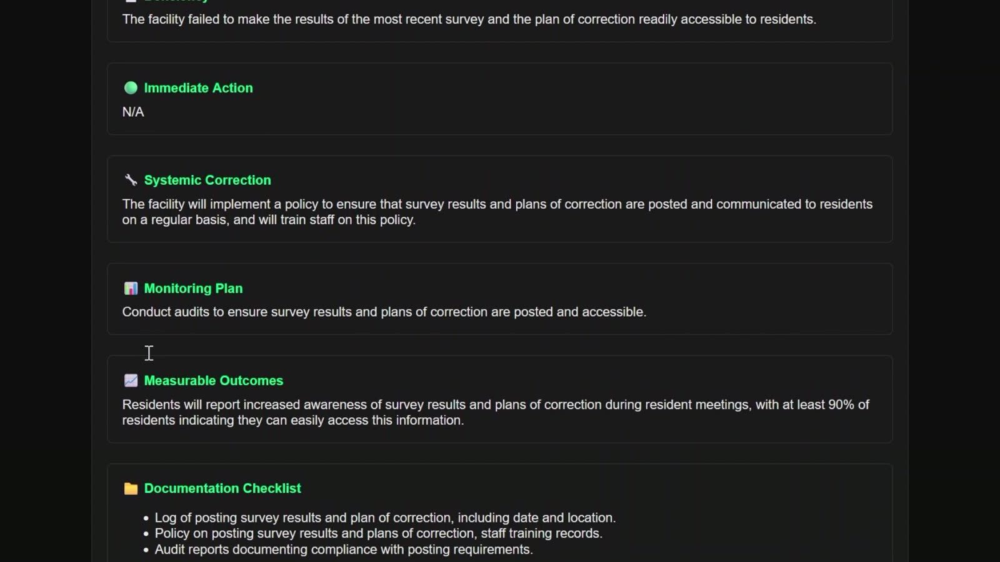

How to Write a Plan of Correction (POC)
A Plan of Correction (POC) is the facility's formal response to deficiencies cited during survey. Most Plans of Correction follow a standard format designed to demonstrate correction, accountability, monitoring, and ongoing compliance.
A POC is not intended to dispute survey findings. It explains how the facility corrected the issue, who is responsible, how compliance will be monitored, and when corrective actions will be completed.
1. Correct the Deficient Practice
Describe what actions were taken to correct the cited deficiency. This section focuses on correcting the specific issue identified during survey.
Examples may include:
- Repairs
- Staff education
- Documentation correction
- Resident intervention
- Policy implementation
2. Identify Residents Potentially Affected
State the number of residents survey identified as potentially affected and describe any actions taken to address resident impact.
3. Assign Responsibility
Identify the department leader responsible for ensuring corrective actions are completed and maintained.
Examples include:
- Director of Nursing
- Maintenance Director
- Dietary Manager
- Infection Preventionist
- Administrator
4. Establish Monitoring
Describe how compliance will be monitored going forward.
Common monitoring methods include:
- Audits
- Department reviews
- Environmental rounds
- Record reviews
- QAPI oversight
5. Establish Completion Dates
Each corrective action should include a completion date consistent with regulatory expectations and implementation timelines.
Example POC Structure
Deficiency: Exit access was obstructed by stored equipment in a resident care area.
Correction: Equipment was removed, the area was inspected, and staff were re-educated on maintaining clear exit access.
Residents Potentially Affected: Survey identified residents on the affected unit as potentially affected. The unit was reviewed for additional blocked exits.
Responsible Party: Maintenance Director and Administrator.
Monitoring: Environmental rounds will be completed three times weekly for four weeks, then reviewed through QAPI.
Completion Date: Corrective actions completed by the stated POC completion date.
How Maven Helps
Maven supports Plan of Correction work by organizing deficiency intake, correction planning, responsibility tracking, monitoring workflows, and documentation support around the standard POC structure administrators already use after survey.
See how Maven generates Plans of Correction →
